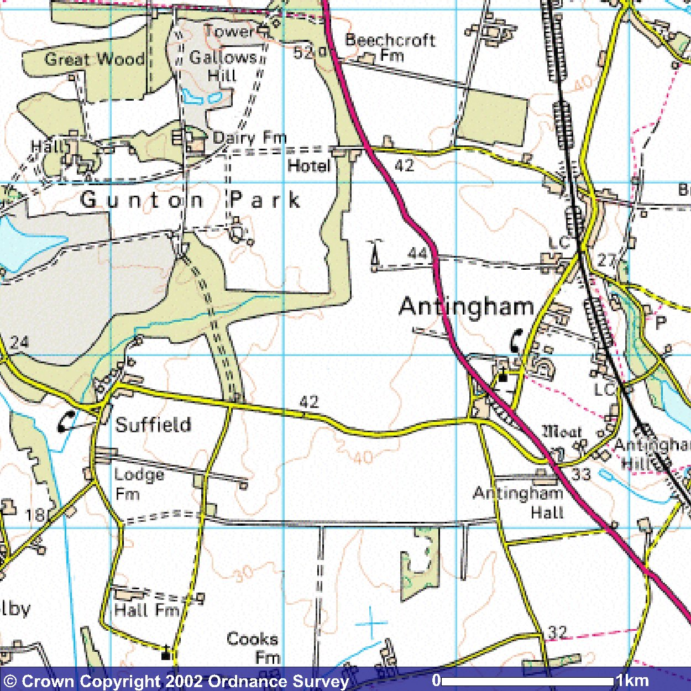

Part 4 (E).
THE EARLY JERMYS OF NORFOLK
Sir John Jermy of Metfield's younger brotherThomas Jermy, Esq (c1445-1503) was described by Walter Rye as 'father of the Norfolk Jermys'. With the exception of the temporary Wighton/Walsingham line of Francis Jermy (c1576-1638) and the equally delimited one of Rev Thomas Jermy at Hethersett, this was certainly the case. Three major branches would emerge in Norfolk - at Marlingford, Gunton and Bayfield - after an initial period at Felmingham, Norwich and Antingham. As mentioned, Thomas and his bride Anne Yelverton may have started their married life about 1475 at Buckenham Ferry (see earlier reference to the floods there in March 1476/7) but they later settled at Felmingham - seemingly long-owned by the Jermys - where they apparently had about three children before Anne died - around 1486 (as estimated). There is an early Feoffment Charter at the NRO which shows that certain properties in Felmingham were to come under the jurisdiction of Thomas Jermy, Esq and Sir John Paston, Knt as of 17 Sept 1492. (One wonders if Christopher Columbus was discovering America that same week?)
I believe Thomas and Anne's first son (born c1475-80) was called after his father - John. A John Jermy, Esq was later shown as a member of an exclusive 'club' in Norwich - the 'Guild of St George' - which began as a Fraternity in 1385, was Chartered in 1416 and wound up in 1731- along with a number of other county dignitaries such as William Paston, Henry Wodehouse and Lord Cobham, and various Hobarts, Le Stranges, Heydons, Sheltons, etc. The year shown was 1566 but this may have been an error and should be checked; 1526 would seem more fitting. For the next John Jermy in Norfolk to be an Esq was the John born in 1555 - who'd be too young in 1566, and while there was a John Jermy, Esq at Stutton then, it seems unlikely he would be a member of such a distant club. But, before he was knighted (in 1533), Sir John Jermy of Brightwell (and London) could have resided for a time in Sprowston (next to Norwich) as an Esq (recall he built a 'mansion house' there in c1520s) and he could, admittedly, represent this man - but, again, only if the 1566 date was wrong. Otherwise, it seems to point to Thomas's first son - who married, around 1502 seemingly, one Mary Brome - who inherited a portion of an estate (Brome Hall) in Blo' Norton, south Norfolk. Except for the above reference by Blomefield, this entry regarding the marriage to Mary Brome (also in Blomefield) is the only other reference to this man - seemingly Thomas Jermy's eldest son - and it sadly fails to show his first name. It was probably John, but might equally have been Thomas, say. He and Mary may have had other children but an
Edward Jermy (c1505-1557), later 'of Stokesby, Gent' (in east Norfolk, nr Yarmouth, held earlier by the Clere's) is the only one to appear in later documents. By 1543, he held the neighbouring Manor of Runham as well. He left a Will (1557) in which he refers to his apparent cousins Robert and Thomas Jermy (leaving them eg 300 tons of Barley), but to no son of his own.
[Note: There was an early Chancery Proceeding for the period 1500-1515 re one Thomas Jermy of London, Mercer and Merchant Venturer (possibly born around 1475, say), in which said Thomas complained against one Dawrya Bartholomew, Merchant of Genoa, re a Bill of Exchange paid for by Thomas - 'in Cloth'. Was this a namesake son of Thomas ? And was this (and not John) the name of Thomas's eldest son therefore ? But why would he not have remained on their estate at Blo' Norton? Or, was he of some Suffolk branch of the family? A mystery man. Another to fall into this category at this period is one 'Frater Wilms Jernmy' a Fransiscan Friar of Great Yarmouth whose head and shoulders are depicted in a 'palimsest brass' at the parish church of Halvergate near Acle with a date of ca 1560. Was he another brother of the above Edward of nearby Stokesby or Runham?]
Norfolk Jermys of the 1500s.
This marriage of Thomas's elder son may have been arranged through his second wife Elizabeth Breton, widow (daughter of Thomas Brampton of Brampton, Esq near Aylsham, Norfolk) whose brother John Brampton would, around 1510, marry Anne Brome, Mary's sister - as her second husband, and his second wife. He had married firstly, in about 1495, Thomasine Jermy - probably a daughter of the present Thomas Jermy, born about 1472. [Some pedigrees show Thomasine as a daughter of Thomas's rather distant brother Sir John Jermy of Metfield, Suffolk. This strikes me as rather unlikely - but is just possible.] Anne Brome had married previously Robert Stede (c1505) and would marry thirdly a Robert Rokewood, Gent. By her middle husband John, she had a son Thomas Brampton who, on his mother's death c1532 (as Anne Rokewood), inherited her portion of the Blo' Norton estate and the following year purchased his aunt Mary's part from her son Edward Jermy. Interestingly, the son of John Brampton's elder son Robert - born to Thomasine Jermy - married Catherine Berney of Gunton (next to Antingham) around 1560; this large estate would later be sold by the Gurneys (through one Ambrose Randolph) to the Jermys.

Image produced from the Ordnance Survey Get-a-map service and
reproduced with kind permission of Ordnance Survey.
Before the elder Thomas's second marriage, he had had another son with Anne - Robert Jermy Snr - in about 1480 and two daughters - Margery and Dorothy. Robert appears to have settled in Norwich around the time his elder brother would step into Felmingham - on their father's death in 1503. (We may note that Thomas died not long before his elder brother Sir John Jermy did so at Metfield - thereby ending this 10th generation of the family in both counties near the beginning of the 16th century.) Thomas's son Robert soon married there (in Norwich) - a daughter of a Norwich Alderman - and had five children, including sons Robert Jnr and Thomas in Norwich - the cousins of Edward Jermy as mentioned above. The elder Robert remained in Norwich - where he died in 1533/4. His sister Margery married the first son of their step-mother Elizabeth - Thomas Breton of Witchingham, Esq. Dorothy Jermy may have been the one of this name (unmarried) who later held considerable property in Gimingham next to Antingham and Felmingham; see further reference to her in The Later Jermys of Norfolk.) With their father Thomas, Elizabeth then had, besides two more daughters, four more sons - Philip, Henry, Edward and Yelverton Jermy - who, in theory, would seem to offer potential for dozens of subsequent Jermy lines - but there appears to be little or no further reference in the literature concerning any of these four - ie whether any survived, married or had viable issue. An apparently still under-aged Philip Jermy is mentioned in a 1528 Will by one John Smith de Walpoole (he not necessarily then actually 'of' Walpole - in either Suffolk or, less likely, west Norfolk). Could this Philip have been a son of the Philip Jermy born c1492 to Thomas and Elizabeth? [There was later a mysterious line centred on Ingham, Norfolk which, conceivable, could derive from one such late son. Jermys associated with Runham and/or Worsted are other areas of north-east Norfolk of possible relevance here also.] Thomas's wife (and Robert's step-mother) Elizabeth also died in 1533 - she referred to as his 'mother-in-law'.
Thomas himself died on 4 Sept 1503 and is, I believe, buried in Felmingham church. Blomefield, however, appears to indicate that he was buried in the parish church at Helmingham (some 5 miles north-west of Norwich) - possibly having read of his burial in some ancient document in old style writing in which the name Felmingham was written with the double small case' ff' (to depict the capital F), interpreting it wrongly as 'Helmingham'. But this needs confirmation. John Jermy of Bayfield may have paid for a retrospective floor brass memorial to Thomas placed in the ?Helmingham church in error - due to this 'authority'. [But check to see if its actually in Felmingham church.]
After the death of Thomas's elder son 'John' (possibly ca 1510-20? - around the same period as the deaths of his comparable 11th generation Jermy cousins - Edmond, John and James Jermy - in Suffolk), I'm unaware of what happened to the Felmingham property. His wife Mary (nee Brome) appears to have re-married - to Sir John Shelton of an important south Norfolk county family. Her son Edward Jermy would eventually acquire Stokesby. It seems that Thomas Snr's second wife Elizabeth had married firstly (c1480) a Robert Clere of Stokesby, Esq - who soon died - about 1483 and from whom she inherited that estate. This must have come eventually to her third husband Thomas Jermy (rather than to her son Thomas Breton - by her short second marriage) and then, seemingly, through Thomas's eldest son (?John) to Edward. A more direct route might be imagined - if Edward was in fact the one of this same name born to Thomas and Elizabeth around 1495, say, but the Stokesby Edward's mother appears to have been Mary Brome. He thus inherited one half of her Blo' Norton estate as well - but sold this in 1533 to his cousin Thomas Brampton - who inherited the other half through his mother Anne, Mary Brome's sister, the previous year.
On the death of the elder Robert (he a second son) in 1533, his son - Robert Jermy Jnr - likely acquired some property in Norwich, but he seems to have held other lands as well. According to Blomefield (vol 1, p382), Robert Snr left "his manor at Buckenham to his step-mother (Elizabeth nee Brampton), and other land in Worstead to his wife Ela". However, Blomefield quotes John Jermy of Buckenham Ferry's Will - dated 24 Oct 1487 - as leaving his manor of Buckingham Ferry (at least), as well as a messuage and church advowson in neighbouring Hassingham, to his wife Margaret for life - after which it was all to be 'sold and the money put to pious uses'. But if Margaret should sell these properties during her lifetime, then she was to get half the money and the rest to go to the children of his elder son - Sir John Jermy in Metfield. Did Margaret overrule this direction or did Robert, rather coincidentally, somehow hold some property in one of the other Buckenhams in Norfolk - possibly arising in conjunction with the large estate of 'Brome Hall in Blo' Norton (not far from Old Buckenham)? But why would Robert not leave it to one or other of his sons, rather than to his step-mother? And what, if anything, did John Jermy, Esq of Buckenham Ferry leave to his younger son - Thomas - in 1487? Possibly, he had title to Felmingham and transferred that to Thomas sometime before he died.
In a Deed of Quit Claim dated 2 Feb 1547/8, brought by the younger Robert, his late father is referred to as having been 'of Norwich, Gent', the son and heir of Thomas Jermy 'of Felmingham, Esq'. In this, Robert Jnr (oddly given no styling himself - but soon to be 'of Antingham') appears to be taking some kind of action concerning family property in Felmingham against a cousin Henry Breton, son of Thomas Breton, Gent (Elizabeth's son). The depiction of the elder Robert as 'son and heir' of Thomas might be thought to imply that he (and not John - if that was his name) was Thomas Snr's eldest son; however, he may have been one of several such heirs (ie not 'sole' heir), and the styling 'Gent' (also shown by Davy) seems to confirm that he didn't become the 'squire' of Felmingham, on his father Thomas's death. [What does Robert's Will of 1533 say/imply in this regard?]
Besides Robert Jnr and Thomas, the elder Robert had 3 daughters - Anne, Bridget and Margaret - probably born in the 1520s (the same decade Henry 8th was trying to have issue with his first wife). Robert's eldest daughter Anne married Henry Cantrell, a Gent of Thorpe by Norwich; Bridget married secondly (14 Oct 1560) another Gent - John Pidgeon of East Beckham (owned by the Pastons) in north Norfolk, while Margaret appears to have remained single and may have been alive in 1558 when possibly referred to in the Will of Francis Raymes of Overstrand, Norfolk as his 'sister Jermy' - to whom he left a gold ring seal. Or, was this Anne (nee Calthorpe), the widow of his brother Robert Raymes, also of Overstrand, who married secondly Robert Jermy - as shown in notes kindly provided by Elizabeth Abbott of Canada, a descendent of that latter union via Rev Anthony Jermy's daughter Alice, who married Rev John Barker. (Several of these children of Robert Snr and Ela Browne are also mentioned in a Will (NCC) of the Palgrave family (1530). The relationships amongst these early Jermys of Norfolk are shown on the right hand side of the following pedigree:
 As mentioned above, the elder brother Robert Jermy Jnr married Anne Calthorpe in about 1548 (as estimated) - she apparently then the widow of Robert Raymes of Overstrand, Esq. The Calthorpes were an important local family - of Antingham - just north of Felmingham. The Jermys' contacts and influence in this area had thus continued despite their sojourn in Norwich. About this time, Robert purchased some property within the Cathedral Precincts in Norwich (the Old Charnel House and Free School with Chapels) and later sold it on to the Mayor of Norwich. Robert died quite young - in 1560 - leaving a Will in which...(to be added)... and was buried in Antingham, 6 Dec 1560. Although a little younger than his second cousin Sir John Jermy (born c1498) of Brightwell, Suffolk (and possibly sometimes of Sprowston, Norfolk), these two representatives of the 12th generation of Jermys (of Norfolk and Suffolk, respectively) died in that same year - early in the reign of Elizabeth - continuing to provide a certain balance and parallel. Robert's widow Anne re-married - John Kempe, Esq (ca 1562) - who would likely have played a role in the upbringing of her still young children - all still under 10 (but where?). He, or possibly his son John Kempe, died in 1610, described as 'of Antingham', Esq - the Kempe's having acquired Antingham through that latter marriage of Anne Jermy, widow. Her sons did not inherit that Manor therefore. Their story and other later Jermys of Norfolk are described in the next Part.
As mentioned above, the elder brother Robert Jermy Jnr married Anne Calthorpe in about 1548 (as estimated) - she apparently then the widow of Robert Raymes of Overstrand, Esq. The Calthorpes were an important local family - of Antingham - just north of Felmingham. The Jermys' contacts and influence in this area had thus continued despite their sojourn in Norwich. About this time, Robert purchased some property within the Cathedral Precincts in Norwich (the Old Charnel House and Free School with Chapels) and later sold it on to the Mayor of Norwich. Robert died quite young - in 1560 - leaving a Will in which...(to be added)... and was buried in Antingham, 6 Dec 1560. Although a little younger than his second cousin Sir John Jermy (born c1498) of Brightwell, Suffolk (and possibly sometimes of Sprowston, Norfolk), these two representatives of the 12th generation of Jermys (of Norfolk and Suffolk, respectively) died in that same year - early in the reign of Elizabeth - continuing to provide a certain balance and parallel. Robert's widow Anne re-married - John Kempe, Esq (ca 1562) - who would likely have played a role in the upbringing of her still young children - all still under 10 (but where?). He, or possibly his son John Kempe, died in 1610, described as 'of Antingham', Esq - the Kempe's having acquired Antingham through that latter marriage of Anne Jermy, widow. Her sons did not inherit that Manor therefore. Their story and other later Jermys of Norfolk are described in the next Part.
To The Later Jermys of Norfolk
To the Jermy Homepage